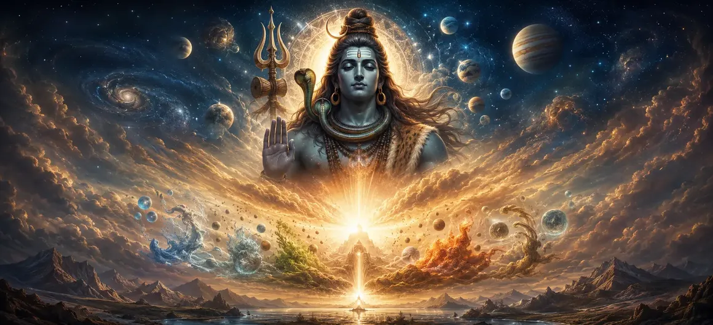

सृष्टि का वर्णन - भाग 1
वायवीय संहिता के अध्याय 10 में, भगवान वायु ने ब्रह्मांडीय सृष्टि की विस्तृत व्याख्या शुरू की है, जो भगवान शिव की सर्वोच्च इच्छा के तहत सार्वभौमिक अभिव्यक्ति के प्रारंभिक चरणों से शुरू होती है।
यह पहला भाग ब्रह्मांडीय सिद्धांतों के जागरण, सूक्ष्म तत्वों के प्रकटीकरण और अभूतपूर्व ब्रह्मांड के प्रारंभिक संरचनात्मक डिजाइन की पड़ताल करता है।
साधकों को अनुक्रमिक चरणों के माध्यम से निर्देशित किया जाता है जो अव्यक्त को भौतिक वास्तविकता से जोड़ता है।
अध्याय 10 व्यापक हाइलाइट्स
प्रारंभिक जागृति
ब्रह्मांडीय अभिव्यक्ति की पहली हलचल का अनावरण।
सूक्ष्म तत्व
मौलिक ब्रह्मांडीय सिद्धांतों के उद्भव का पता लगाना।
संरचनात्मक डिज़ाइन
सार्वभौमिक क्षेत्रों की प्रारंभिक रूपरेखा की जांच करना।
शिव का उत्प्रेरक
परम शिव को परम रचनात्मक शक्ति के रूप में समझना।
अनुक्रमिक विकास
ब्रह्मांडीय पदार्थ का चरण-दर-चरण खुलासा।
भाग 2 का प्रवेश द्वार
अध्याय 11 में आगे के सृजन विवरण के लिए साधक को तैयार करना।
इस अध्याय में मुख्य विषय
- 01सृजन की प्रारंभिक जागृति और प्रेरणा→
- 02विकास के प्रमुख प्रेरक के रूप में सर्वोच्च शिव→
- 03सूक्ष्म ब्रह्मांडीय सिद्धांतों (तत्त्व) की अभिव्यक्ति→
- 04लौकिक बुद्धि और अहंकार का उदय→
- 05संवेदी और मोटर अंगों का प्रकटीकरण→
- 06पाँच सूक्ष्म तत्वों (तन्मात्राओं) का निर्माण→
- 07ब्रह्मांडीय अंडे (ब्रह्माण्ड) के लिए आधार तैयार करना→
- 08दैवीय इरादे के माध्यम से व्यवस्था बनाए रखना→
- 09भौतिक पदार्थ को आध्यात्मिक दृष्टि से देखना→
- 10सृष्टि के विवरण में परिवर्तन - भाग 2→
सृजन की प्रारंभिक जागृति और प्रेरणा
भगवान वायु बताते हैं कि जब सार्वभौमिक अभिव्यक्ति का समय आता है तो सुप्त ब्रह्मांडीय ऊर्जा कैसे हलचल शुरू कर देती है।
यह मौलिक आवेग प्रलय की शांति को तोड़ता है, सक्रिय सृजन के भव्य चक्र की शुरुआत करता है।
विकास के प्रमुख प्रेरक के रूप में सर्वोच्च शिव
यद्यपि भौतिक तत्व और ब्रह्मांडीय शक्तियां यांत्रिकी को संचालित करती हैं, परम शिव हर गति के पीछे अदृश्य उत्प्रेरक बने रहते हैं।
उनकी सर्वोच्च चेतना और इच्छा से स्वतंत्र रूप से कुछ भी प्रकट नहीं होता है।
सूक्ष्म ब्रह्मांडीय सिद्धांतों (तत्त्व) की अभिव्यक्ति
पाठ प्राथमिक तत्त्वों के क्रमिक उद्भव का विवरण देता है, जो शुद्ध आत्मा को उभरती हुई भौतिक क्षमता से जोड़ता है।
ये सूक्ष्म सिद्धांत बाद की सभी भौतिक वास्तविकताओं का खाका बनाते हैं।
लौकिक बुद्धि और अहंकार का उदय
अव्यक्त मूल से महत (ब्रह्मांडीय बुद्धि) उत्पन्न होती है, उसके बाद अहंकार (व्यक्तित्व और अहंकार का सिद्धांत) उत्पन्न होता है।
ये मनोवैज्ञानिक और ब्रह्मांडीय क्षमताएं यह तय करती हैं कि चेतना कैसे प्रकट ब्रह्मांड का अनुभव करती है।
संवेदी और मोटर अंगों का प्रकटीकरण
विकासवादी धारा संज्ञानात्मक इंद्रियों, क्रिया क्षमताओं और कनेक्टिंग माइंड के गठन के साथ जारी रहती है।
सृष्टि के परिपक्व होने पर ये उपकरण जीवित प्राणियों को बाहरी दुनिया के साथ बातचीत करने के लिए तैयार करते हैं।
पाँच सूक्ष्म तत्वों (तन्मात्राओं) का निर्माण
ध्वनि, स्पर्श, रूप, स्वाद और गंध की सूक्ष्म क्षमताएं स्थूल भौतिक निर्माण की तैयारी के लिए प्रकट होती हैं।
ये तन्मात्राएँ मानसिक क्षमताओं और भौतिक पदार्थ के बीच सेतु का काम करती हैं।
ब्रह्मांडीय अंडे (ब्रह्माण्ड) के लिए आधार तैयार करना
ये सभी विकसित तत्व ब्रह्माण्ड के गर्भ का निर्माण करने के लिए एकत्रित होते हैं, जिससे ब्रह्माण्ड के प्रकट होने के लिए मंच तैयार होता है।
यह विशाल नियंत्रण भविष्य के सभी लोकों, स्वर्गों और पाताल क्षेत्रों को धारण करता है।
दैवीय इरादे के माध्यम से व्यवस्था बनाए रखना
यहां तक कि अपने प्रारंभिक चरण में भी, ब्रह्मांडीय प्रकटीकरण सख्त संरचनात्मक सद्भाव और निर्दोष दिव्य डिजाइन का पालन करता है।
सर्वोच्च शिव द्वारा निर्धारित वास्तुकला में अराजकता का कोई स्थान नहीं है।
भौतिक पदार्थ को आध्यात्मिक दृष्टि से देखना
इन प्रारंभिक सृजन चरणों का अध्ययन साधकों को याद दिलाता है कि पदार्थ दिव्य चेतना से अलग नहीं है।
प्रत्येक परमाणु परम शिव की स्पंदनशील उपस्थिति को प्रतिध्वनित करता है।
सृष्टि के विवरण में परिवर्तन - भाग 2
सृष्टि के वर्णन के भाग 1 को समाप्त करते हुए, भगवान वायु दर्शकों को भाग 2 में दुनिया और प्राणियों की आगे की अभिव्यक्ति का पता लगाने के लिए तैयार करते हैं।
अध्याय 10 की विस्तारित मुख्य शिक्षाएँ
आदिम आवेग
प्रलय की शांति को तोड़कर सृजन आरंभ करना।
तत्त्व और सिद्धांत
सूक्ष्म ब्रह्मांडीय तत्वों का क्रमिक उद्भव।
ब्रह्मांडीय खाका
भौतिक वास्तविकता का संरचनात्मक डिज़ाइन तैयार करना।
शिव की इच्छा
परम शिव विकास के हर चरण को संचालित करते हैं।
ब्रह्माण्ड गर्भ
सार्वभौमिक कंटेनर बनाने के लिए तत्वों का संयोजन।
अध्याय 11 का प्रवेश द्वार
भाग 2 में साधक को सृष्टि की निरंतरता के लिए तैयार करता है।
विस्तारित आध्यात्मिक चिंतन
जब हम अध्ययन करते हैं कि सूक्ष्म तत्व, बुद्धि और ब्रह्मांडीय सिद्धांत अव्यक्त से कैसे उभरते हैं, तो हमें एहसास होता है कि ब्रह्मांड ईश्वर का एक जटिल विचार-रूप है। सृष्टि की इस आध्यात्मिक संरचना को पहचानने से हमारी सांसारिक धारणा पवित्र विस्मय के अनुभव में बदल जाती है।
अध्याय 10 का संदेश जीना
अपने शरीर और मन को ब्रह्मांडीय विकास के पवित्र तत्वों से निर्मित दिव्य उपकरणों के रूप में सम्मान दें।
सभी चीज़ों में सर्वोच्च शिव की अंतर्निहित चेतना को पहचानने के लिए सतही दिखावे से परे देखें।
अपने आध्यात्मिक अभ्यास को उस भव्य ब्रह्मांडीय व्यवस्था के प्रति गहरे सम्मान के साथ अपनाएं जो आपको कायम रखती है।
विस्तृत प्रमुख आध्यात्मिक अवधारणाएँ
सृष्टि का प्रारम्भिक जागरण एवं प्रारम्भ।
अव्यक्त ऊर्जा से उत्पन्न होने वाली ब्रह्मांडीय बुद्धि।
अहंकार और व्यक्तित्व सिद्धांतों का उद्भव।
सूक्ष्म संवेदी क्षमताओं का प्रकटीकरण।
ब्रह्मांडीय अंडे का मूलभूत गठन।
ब्रह्मांडीय विकास को संचालित करने वाली सर्वोच्च प्रेरक शक्ति।
विस्तृत अध्याय सारांश
वायवीय संहिता अध्याय 10 ('सृष्टि का विवरण - भाग 1') ब्रह्मांडीय विकास के प्रारंभिक चरणों का विवरण देता है, जिसमें पता चलता है कि कैसे अव्यक्त ऊर्जा भगवान शिव की सर्वोच्च इच्छा के तहत सूक्ष्म तत्त्वों, ब्रह्मांडीय बुद्धि, अहंकार, संवेदी क्षमताओं और तन्मात्राओं में जागृत होती है। यह पहला भाग ब्रह्मांड के लिए संरचनात्मक आधार तैयार करता है, पाठक को अध्याय 11 में सृजन की निरंतरता के लिए तैयार करता है।
अक्सर पूछे जाने वाले प्रश्न
1. वायवीय संहिता अध्याय 10 ('सृष्टि का विवरण - भाग 1') का प्राथमिक विषय क्या है?
अध्याय में ब्रह्मांडीय विकास के प्रारंभिक चरणों का विवरण दिया गया है, जिसमें पता लगाया गया है कि कैसे अभूतपूर्व ब्रह्मांड भगवान शिव की सर्वोच्च इच्छा के तहत मौलिक तत्वों से प्रकट होना शुरू होता है।
2. इस प्रवचन में सृष्टि का पहला भाग कैसे प्रकट होता है?
यह सूक्ष्म और स्थूल ब्रह्मांडीय सिद्धांतों की क्रमिक अभिव्यक्ति के माध्यम से प्रकट होता है, जो भौतिक अस्तित्व के लिए संरचनात्मक आधार तैयार करता है।
3. इस प्रारंभिक चरण में प्राथमिक तत्व क्या भूमिका निभाते हैं?
प्राथमिक तत्व मूलभूत निर्माण खंड बनाते हैं जो बाद के ब्रह्मांडीय क्षेत्रों और जीवित रूपों को आकार लेने की अनुमति देते हैं।
4. परम शिव का सृष्टि के इस वर्णन से क्या संबंध है?
शिव रचनात्मक विकास के हर चरण के पीछे पारलौकिक उत्प्रेरक और मास्टर नियंत्रक बने हुए हैं।
5. आध्यात्मिक जिज्ञासुओं के लिए सृष्टि के चरणों का अध्ययन क्यों लाभदायक है?
यह ब्रह्मांड की दिव्य वास्तुकला को प्रकट करता है, गहरी श्रद्धा और भौतिक लगाव की भ्रामक प्रकृति की स्पष्ट समझ को बढ़ावा देता है।
6. इस अध्याय के बाद नेविगेशन के लिए अगला अध्याय कौन सा है?
नेविगेशन के लिए अगला अध्याय 'सृष्टि का विवरण - भाग 2' है।
"सर्वोच्च चेतना की अव्यक्त गहराई से, सृष्टि की पहली सांस हिलती है, शिव की नज़र के नीचे ब्रह्मांड की शानदार टेपेस्ट्री बुनती है।"
वायवीय संहिता के माध्यम से जारी रखें
अध्याय 10 समाप्त हुआ. अगले अध्याय, सृष्टि का विवरण - भाग 2 को जारी रखें।